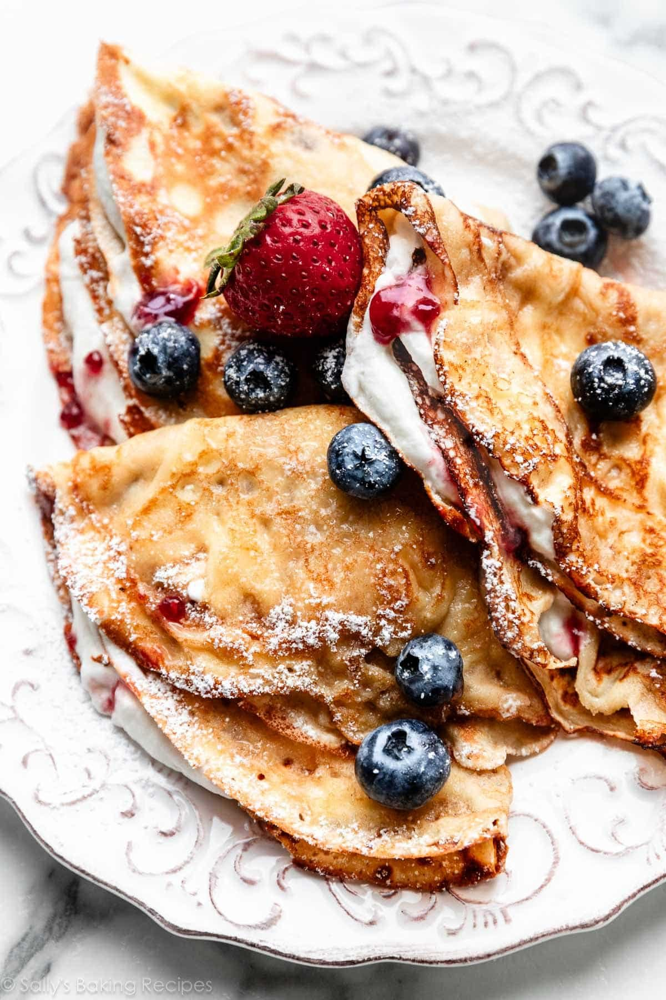

Crêpes

Since growing up at EB, monique and I have always loved making crêpes, and it's so fun to whip
some up on the weekends when we have the time.
Ingredients
- 3 tablespoons butter (more for pan)
- 1 cup all-purpose flour
- 1 tablespoon granulated sugar
- 1/8 teaspoon salt
- 3/4 cup whole milk (room temp)
- 1/2 cup water
- 2 large eggs (room temp)
- 1 1/2 teaspoon vanilla extract
Steps
- Melt 3 Tablespoons of butter in the microwave or on the stove. Cool for about
5 minutes before using in the next step. The remaining butter is for the skillet.
- Combine the cooled melted butter, flour, sugar, salt, milk, water, eggs, and vanilla
in a blender or large food processor. If you don’t have a blender or food processor,
use a large mixing bowl and whisk by hand.
- Blend on medium-high speed for 20–30 seconds until everything is combined. The mixture
will be silky-smooth and the consistency of cream. Cover the blender tightly or pour
into a medium bowl, cover tightly, and chill in the refrigerator for 30–60 minutes
and up to 1 day. (After refrigerating, if the batter looks separated, give it a
quick stir before cooking in the next step.)
- Use the remaining butter for greasing the pan between each crepe. Place an 8-inch
skillet over medium heat and generously grease it with some of the reserved butter.
Once the skillet is hot, pour 3–4 Tablespoons (closer to 3 is best) of
batter into the center of the pan. Tilt/twirl the pan so the batter stretches as far
as it will go. The thinner the crepe, the better the texture. Cook for 1–2 minutes,
then flip as soon as the bottom is set.
- Serve with fruit, nutella, jam, lemon & sugar, whipped cream, or toppings of your choice.